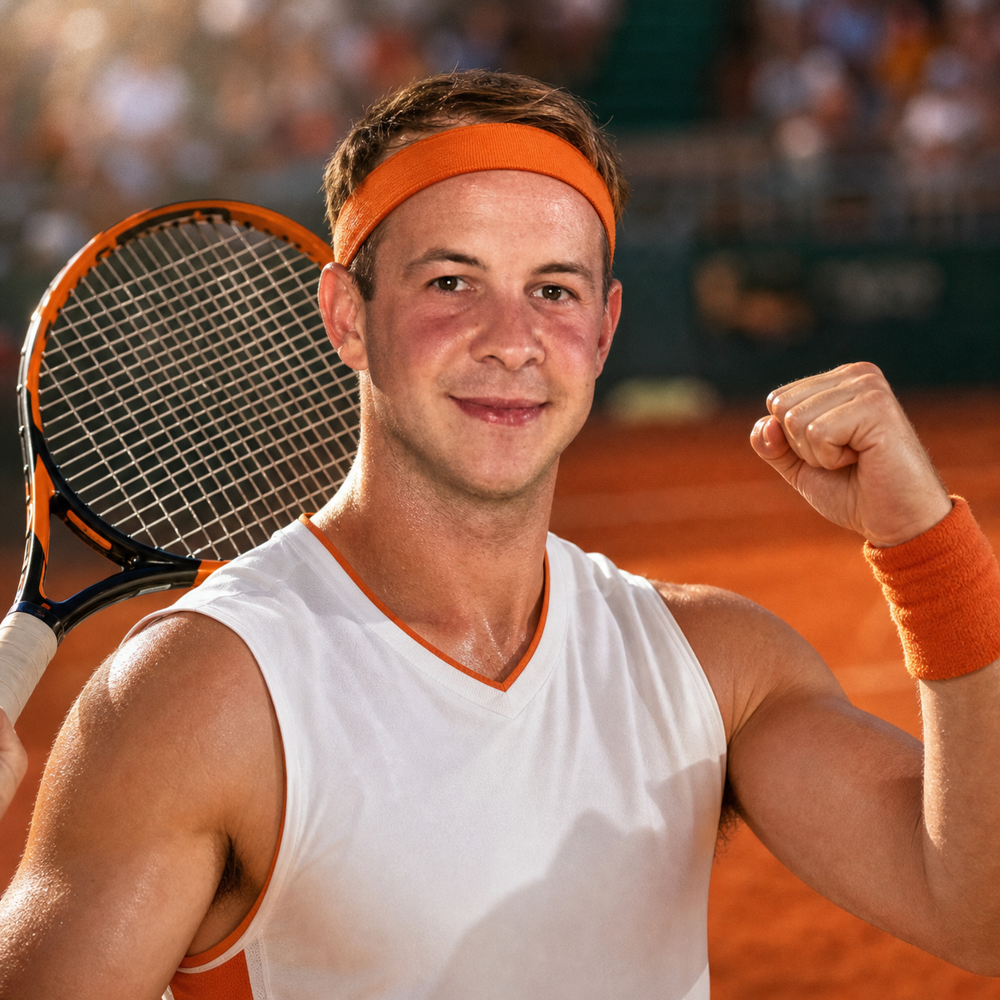

Featured Competitor
Martin Lacko
The UI Matador
Development Team Lead tima 1, front UI specijalist i igrač koji na teren donosi istu stvar koju donosi u sučelje: brzinu, čiste linije i završni pixel-perfect udarac.
- RoleDevelopment Team Lead
- Age27
- TeamTeam 1
- GroupB
- Play StyleFront UI Power
- Signature MoveResponsive Forehand
Scouting Report
Martin igra kao da slaže frontend komponentu: prvo postavi strukturu, zatim ritam, pa onda precizno zatvori poen kad se otvori prava prilika.
Kao Development Team Lead tima 1 navikao je čitati situaciju brzo, držati fokus pod pritiskom i ne paničariti kad breakpoint izgleda kao produkcijski bug petkom popodne.
- Najbolje izgleda kad poen dobije čist ritam i dovoljno prostora za napad.
- Front UI refleksi pomažu mu brzo reagirati na neočekivane lopte.
- Voli uredan raspored poena: servis, pritisak, završetak bez nepotrebnog reflowa.
- Najopasniji je kad se meč pretvori u mali usability test protivnikove obrane.
Agility8/10
Focus8/10
Serve7/10
Clutch8/10